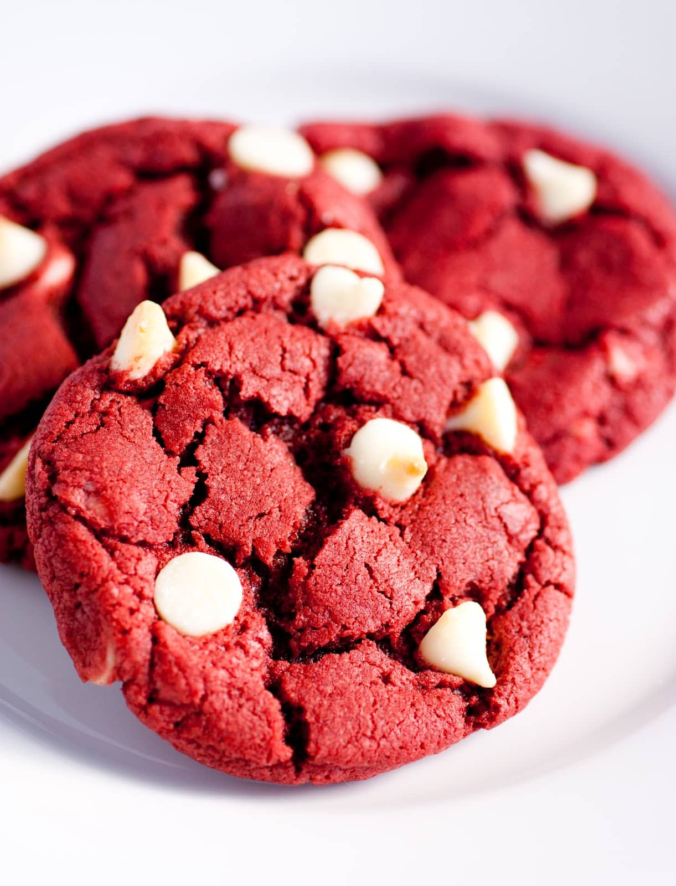

Best cookies ever!
Ingredients
- 1/2 cup (113g) unsalted butter, melted
- 1/3 cup (66 g) granulated sugar
- 1/2 cup (104g) packed light brown sugar
- 1 large egg
- 1 teaspoon (5ml) vanilla extract
- 1/2 teaspoon baking soda
- 1/2 teaspoon salt
- 1 1/2 cups (186g) all-purpose flour
- 1 1/2 cups (255g) chocolate chips (semi-sweet or milk)
Preparation
- Note: This dough requires chilling.
- Place melted butter in the bowl of a stand mixer fitted with the paddle attachment (or a large bowl if using
a hand mixer). Add granulated and brown sugars and mix on low speed until the mixture is smooth. Mix in egg
and vanilla extract and mix on medium speed until combined.
- Mix in baking soda and salt, then slowly mix in flour and mix just until the batter is smooth and comes
together. Be sure to scrape the sides of the bowl during mixing. Slowly mix in chocolate chips.
- Line a cookie sheet with a silicone baking mat or parchment paper. Scoop 2 tablespoon balls of dough onto
the cookie sheet. Spacing doesn’t matter because you will be chilling the dough. Cover with plastic wrap and
chill for at least 2 hours.
- Preheat oven to 350°F. Line a second cookie sheet with parchment paper or a silicone baking mat.
- Remove the chilled cookie dough balls from the refrigerator and space them 2-inches apart on the cookie
sheets. Bake (2 tablespoon sized cookies) for 11-15 minutes, or until the edges are a light golden and the
tops are no longer glossy. Let cool on the cookie sheets at least 10 minutes before removing.